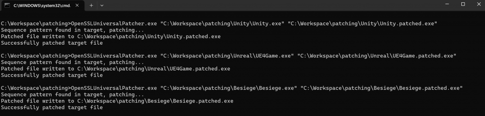

The Problem
Besiege on the Xbox PC/Microsoft Store platform crashes for users with specific hardware specifications. This is caused by a bug in the Unity 5.4.0f3 Editor (and builds made with it) where apps that use OpenSSL (i.e., secure web requests) crash on 10th and 11th gen Intel CPUs.
The Solution
The OpenSSL Universal Patcher is a command-line tool designed to patch 64-bit Windows binary executables that are linked to an older version of OpenSSL (1.1.0). It resolves crashes on 10th and 11th gen Intel CPUs and improves the overall stability and security of the affected binaries.
How It Works
The patcher replaces specific x86-64 assembly instructions to redirect register usage, fixing the compatibility issue at the binary level:
# lea rax, [rsi+40h]
original: 48 8D 46 40
# lea r8, [rsi+40h]
patched: 4C 8D 46 40
# 4 bytes from the previous instruction
offset: 4
# cmovnz rsi, rax
original: 48 0F 45 F0
# cmovnz rsi, r8
patched: 49 0F 45 F0The patch that changes 2 OpenSSL specific instructions.

I wrote a blog post about creating a patch, so check out this article if you're interested.